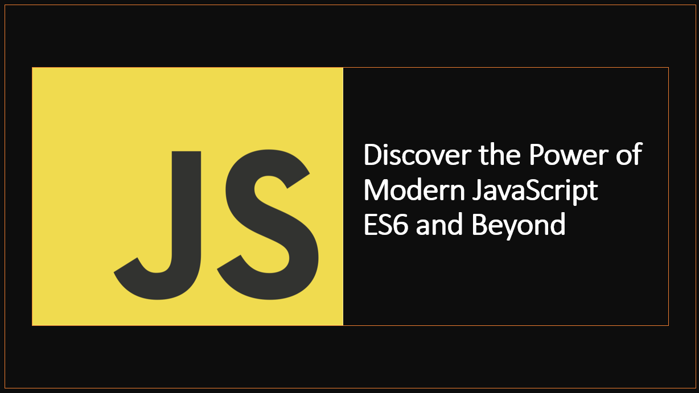

Introduction
JavaScript is one of the most popular programming languages in the world, used by millions of developers to build web applications and websites.
It is a dynamic, high-level language that is easy to learn and use, making it a great choice for beginners and experienced developers alike.
JavaScript has evolved over the years, with new features being added to the language to make it more powerful and expressive.
In this blog post, we will explore some of the latest features introduced in ES6 and beyond, highlighting how they improve JavaScript development.
1. Arrow Functions
Arrow functions are a concise and more expressive way to define functions in JavaScript. They offer a shorter syntax compared to traditional function expressions, making code more readable and maintainable.
As an example:
function add(a, b) {
return a + b;
}
const add = (a, b) => a + b;
In this example:
- The
add function is defined using the traditional function expression syntax. - The
add function is defined using the arrow function syntax.
2. Template Literals
Template literals provide a convenient way to work with strings in JavaScript, allowing multiline strings and dynamic variable interpolation directly within the string.
As an example:
const name = "Alice";
const age = 30;
const message = "Hello, my name is " + name + " and I am " + age + " years old.";
const message = `Hello, my name is ${name} and I am ${age} years old.`;
3. Destructuring Assignment
Destructuring assignment allows you to extract individual values from arrays or objects easily, making code more concise and readable.
As an example:
const numbers = [1, 2, 3];
const [a, b, c] = numbers;
const person = { name: "John", age: 25 };
const { name, age } = person;
4. Spread Operator
The spread operator enables easy copying of arrays and objects, as well as merging multiple arrays and objects into a new one.
As an example:
const originalArray = [1, 2, 3];
const copiedArray = [...originalArray];
const array1 = [1, 2];
const array2 = [3, 4];
const mergedArray = [...array1, ...array2];
const originalObject = { x: 1, y: 2 };
const copiedObject = { ...originalObject };
Async/await is a new way to write asynchronous code in JavaScript, making it easier to work with promises. It allows you to write asynchronous code in a synchronous manner, making it easier to read and maintain.
As an example:
function getData() {
return fetch("https://jsonplaceholder.typicode.com/todos/1")
.then((response) => response.json())
.then((data) => console.log(data))
.catch((error) => console.log(error));
}
async function getData() {
try {
const response = await fetch(
"https://jsonplaceholder.typicode.com/todos/1"
);
const data = await response.json();
console.log(data);
} catch (error) {
console.log(error);
}
}
Conclusion
In this blog post, we explored some of the latest features introduced in ES6 and beyond, highlighting how they improve JavaScript development. From concise arrow functions and expressive template literals to asynchronous programming with async/await, we have seen how these features make JavaScript more powerful and expressive. We hope you found this blog post useful and that it will help you write better JavaScript code in the future.